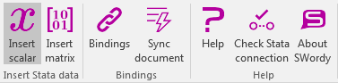
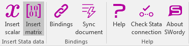
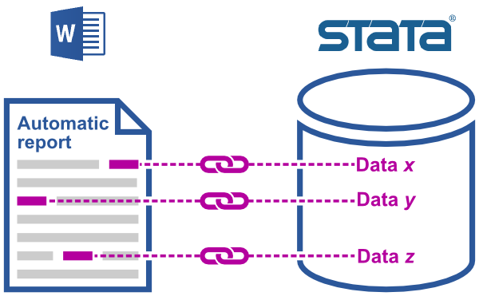
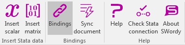
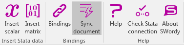
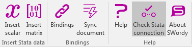

Help
Help
About SWordy
What is SWordy?
SWordy is an Office add-in which allows data import from Stata into a Microsoft Word document. SWordy can also create automatic documents, namely Word documents which can automatically update their data by retrieving it from Stata.
How SWordy works
SWordy enables communication between Word and Stata. This is made possible by SWire, which is a Stata Java plugin. SWire is essentially a server which executes several operations as requested by external client applications. In this communication architecture, SWordy runs inside Word and SWire runs inside Stata, thus constructing a bridge between Word and Stata.

SWordy and SWire communicates with Stata via an HTTPS connection.
In order to allow the communication between Word and Stata, the SWire server must run in HTTPS mode.
The SWire HTTPS server can be started by typing the following in Stata:
swire start, https
Requirements
In order to use SWordy with Microsoft Word you need:
- Microsoft Word from Office >= 2016
- Stata >= 13
- SWire >= 0.2
- Internet Explorer >= 11 (this is required if SWordy is used in Word for Windows)
SWire must be started in HTTPS mode.
Licence
SWordy is free software and it has been released under the terms of the Gnu Public License 3.
Official repositories
SWordy can be downloaded from any of the following repositories:
Author
SWordy was developed by Giovanni Luca Lo Magno (lomagno.gl@virgilio.it).
Also see
SWire
What is SWire?
SWordy uses SWire to enable communication between Word and Stata. SWire is a software interface, enabling us to interrogate Stata for the execution of basic operations like reading, inserting or modifying data.
The core of SWire is a Stata Java plugin, which functions as a server, and it can be interrogated either by using the HTTP or the HTTPS protocol. SWire is in essence a wrapper around the Stata-Java API, and all the functions relating to this API can, therefore, be externally invoked by clients.
Minimum required version
SWordy can communicate with SWire only by using the HTTPS protocol. SWire can use HTTPS only from the 0.2 version. Thus SWire >= 0.2 is required by SWordy.
Installation
First, be aware that SWire is a Stata Java plugin and it can be installed in Stata >= 13. To install SWire, follow these steps:
- Download the binary SWire zip file from here and uncompress it.
- Follow the instructions in the README file in the uncompressed folder.
- If you wish to use SWire in the HTTPS mode, you have to trust the SWire server Certificate: how to do this depends on your operating system and the HTTPS client you use for connecting to SWire.
- To learn about HTTPS read here and read here to learn about TLS/SSL certificates.
Allowing the functioning of SWordy
To allow the functioning of SWordy, start the SWire HTTPS server by typing the following in Stata:
swire start, https
Also see
Installation
There a two modes for installing SWordy in Word:
- from the Office Store (in this case you will use SWordy from the internet) and
- locally (in this case SWordy will be hosted on your machine).
Installation from the Office Store is user-friendly. Instead, local installation is more of a challenge and is recommended only for advanced users.
Warning: even if you install SWordy locally, you will need an internet connection for using SWordy.
Also see
Installation from the Office Store
If SWordy is installed from the Office Store, the files which may have been downloaded from the official repositories are not needed. Simply follow these steps:
- Open Microsoft Word (at least the 2016 version).
- Open the "Insert" tab on the ribbon and click on the "Office Add-ins" button.
- Select "Store"
- Search "SWordy" by Giovanni Lo Magno and install it.
Thereafter, there should appear a new "SWordy" tab on the ribbon.
Also see
Local installation
Local installation is recommended for advanced users only. Other users may prefer to install SWordy from the Office Store.
Warning: even if you install SWordy locally, you will need an internet connection for using SWordy.
Users who wish to install SWordy locally will need to have a basic understanding of the following:
SWordy can be installed locally by downloading it from any of the following repositories:
- SourceForge: https://sourceforge.net/projects/swordy
- GitHub: https://github.com/lomagno/swordy
Downloading SWordy from SourceForge will produce a zip file, which will need to be unzipped.
Downloading from GitHub will provide the user with the entire GIT repository, with the added advantage of obtaining the accessing to the latest development version and any previous software release. The SWordy repository can be cloned by typing:
git clone https://github.com/lomagno/swordy
The user should know, prior to commencing with local installation, that SWordy is an Office add-in and (as is the case with all Office add-ins) it is composed of a manifest file and a web application: the former describes the add-in by providing Word with all the necessary information for add-in activation; the latter constitutes the core of the add-in and it can be hosted on a remote web server or locally.
The SWordy manifest for local installation is the "swordy-manifest-local.xml" file, which is located in the "manifest" folder. This file must be loaded by Word but, for security reasons, Word can load it only if the manifest is served in an appropriate way. Information relating to how to enable Word to load the manifest will be provided later in this document.
The web application can be hosted on the internet or a local system but in both cases it must be served through the HTTPS protocol.
For local installation the SWordy HTTPS server can be used.
Prior to starting this server, all the Node.js package dependencies will need to be installed; after npm has been installed, type "npm install" from the SWordy root folder to install that dependencies.
Furthermore, the SWordy HTTPS server requires several private keys and Certificates.
These can be generated by executing the "generate_certificates.sh" script, which requires OpenSSL.
Linux and Mac users can run this script from their shell but a Windows user will need a shell which can run a bash script and openssl commands.
Having downloaded Git BASH for Windows from https://git-scm.com/download/win, install it.
Finally, remember that the public Certificate used by the SWordy HTTPS server must be trusted by your system.
Read the operating system documentation to learn how to trust a Certificate.
To install SWordy locally, follow these steps:
- Install Node.js (https://nodejs.org) and npm (https://www.npmjs.com/).
-
Enter the "swordy" folder (by typing, for example, "
cd /mypath/swordy") from your terminal. -
Type "
npm install" to install all package dependencies (internet connection required). -
Execute the "generate_certificates.sh" script by typing "
./generate_certificates.sh" (in Windows type this from the Git BASH). This script will generate the following files: swordy_ca.key (the private RSA key for the SWordy certification authority), swordy_ca.crt (the self-signed Certificate for the SWordy certification authority), server.key (the private RSA key for the server), server.csr (the Certificate signing request for the server Certificate) and server.crt (the Certificate for the server). The server.csr file can be deleted because it is used only as an intermediate file in the certification generation process. - Install the "swordy_ca.crt" Certificate in your system, the modality of which will depend on your operating system. The Certificate will be valid for approximately 5 years (1,826 days). Once this period has expired, the old Certificate will have to be uninstalled and the procedure for installing a new Certificate should be repeated (run the generate_certificates.sh script and reinstall the "swordy ca.crt" Certificate into the system).
-
Type "
npm start" to start the HTTPS web server. - Test the connection to the SWordy HTTPS server by opening https://localhost:3000/ from your web browser; the latter depends on your operating system: use Internet Explorer if you use Word for Windows (Internet Explorer is the browser which is internally used by Word).
- Using Word, load the "swordy-manifest-local.xml" manifest file from the "manifest" folder (the other "sword-manifest.xml" file is for the online version). The procedure varies in relation to the Word type. If you use Word for Windows, read the following step.
-
With Word for Windows, Word can be enabled to load the manifest file by putting the manifest into a shared folder.
In order to load the manifest file, do the following:
- right-click on the "manifest" folder, which is located in the "swordy" main folder;
- select "Properties";
- click on the "Sharing" tab;
- open the "Advanced sharing" dialog window by clicking on the "Advanced sharing..." button;
- check the "Share this folder" checkbox;
- type a name for the shared folder in the "Share name" text field (for example, "SWordy manifest folder");
- click on the "Permissions" button (to open a dialog window for setting permissions) and enable all permissions (including read and write permissions);
- close Word and relaunch it;
- go to the "File" tab and select "Options";
- select "Trust Center";
- click on the "Trust Center Settings...." button;
- select "Trusted Add-in Catalogs";
- type the network path to the shared folder (for example, "\\MYUSERNAME-PC\SWordy manifest folder") into the "Catalog Url" text field. Then click on the "Add catalog" button to add this path to the list of the trusted catalog addresses (if the network path to the shared folder is unknown, right-click on the "manifest" folder, select "Properties", click on the "Sharing" tab and read the network path from there);
- find the network path just added in the list of trusted catalog addresses, and check the related "Show in Menu" checkbox;
- close all the Word dialog windows which were opened to set the options by clicking on the "OK" button and accept all changes;
- close Word and restart it;
- select the "Insert" tab on the ribbon, click on the "Add-ins" button and choose "My Add-ins": this will open the dialog window you will use to add the SWordy add-in;
- click on "Shared folder";
- select "Swordy (local)" and click on "Add". If the SWordy logo for the "SWordy (local)" add-in does not visualize, the SWord HTTPS server may not have been started. Therefore, prior to adding the SWordy add-in, enter the SWordy main folder and start this SWordy server by typing npm start from the terminal.
Once the SWordy add-in has been installed into Word, there will appear a new SWordy tab on the ribbon.
Also see
Insert Stata data
Two types of Stata data can be inserted in the Word document:
Data is inserted where the cursor has been positioned. If documentation selection is active, that selection will be replaced by the inserted data.
Insert scalar
Stata numerical scalars can be inserted by using the "Insert scalar" taskpane. This taskpane can be opened by clicking on the "Insert scalar" button on the ribbon, which is located beneath the "SWordy" tab.
In order to insert a scalar into a Word document, set the following fields in the "Insert scalar" taskpane:
- the scalar name (a name for an existing numeric scalar is required)
- the number of decimals (to set how many decimals will be used in formatting the inserted number).
- the encoding type for the missing values.
The encoding type for the missing values is for setting how to format Stata missing values in Word. Stata missing values are internally represented in Stata as large positive values, thus the user have to choose how to format them in the Word document. See the Stata documentation regarding missing values to understand how they are represented in Stata.
Once these fields have been correctly set, insert the desired scalar by clicking on the "Insert scalar" button on the taskpane. This button will remain disabled until all the required fields have been set.
The scalar will be inserted at the current cursor position and it will replace any current selection.
Also see
Insert matrix
Stata matrices can be inserted by using the "Insert matrix" taskpane. This taskpane can be opened by clicking on the "Insert matrix" button on the ribbon, which is located beneath the "SWordy" tab.
In order to insert a matrix in the Word document, set the following fields in the "Insert matrix" taskpane:
- the matrix name (a name for an existing matrix is required)
- the number of decimals (to set how many decimals will be used in formatting the inserted numbers).
- the encoding type for the missing values.
The number of decimals is specified by a comma-separeted list of integer numbers. The first number of the list refers to the first column, the second refers to the second column and so on. For example type "3, 5, 2" if you want 3 decimal places for the first column, 5 decimal places for the second column and 2 decimal places for the third column. If the number of columns is greater than the list length, then the last number of the list is used for all the columns for which nothing has been specified. For example typing "3, 5" for a matrix with 4 column is equivalent to typing "3, 5, 5, 5". Typing only a number, that number will be applied for all the columns. For each column you can set a number of decimal places between 0 and 20.
The encoding type for the missing values is for setting how to format Stata missing values in Word. Stata missing values are internally represented in Stata as big numbers, thus the user have to choose how to format them in the Word document.
Once these fields have been correctly set, insert the desired matrix by clicking on the "Insert matrix" button on the taskpane. This button will remain disabled until all the required fields have been set.
The matrix will be inserted at the current cursor position as a Word table and it will replace any current selection.
Also see
Bindings
What is a binding?
A binding is a link between a Stata data and a piece of text in Word. From the user's point of view, a binding is a placeholder (a temporary piece of text) which the user inserts into the Word document to indicate the automatic locating of the Stata data.
The Stata data will replace the binding after a sync request has been performed in SWordy. Bindings can be used to create an automatic document, namely a document with numeric values and tabular data which can be automatically retrieved from Stata. An automatic document relieves the user from the burden of manually updating reports which share a common format and which differ only by the numeric values they convey.
The "Bindings" taskpane
Bindings are created and managed through the "Bindings" taskpane. This taskpane can be opened by clicking on the "Bindings" button on the ribbon, which is located beneath the "SWordy" tab.
This taskpane has two sections:
- Create: it allows the user to create new bindings for scalar or matrix Stata data
- Manage: it allows the listing, searching, updating and deleting of bindings.
Creating new bindings
New bindings can be created from the "Create" section of the "Bindings" taskpane. Two types of data can be binded to: scalar and matrix.
To create a binding for a scalar, select a piece of text (irrespective of the content). From the "Create" section, select "scalar" as the binding type, set the scalar name and fill the other fields (for the documentation regarding the other fields see Insert scalar). Finally, click on "Bind".
To create a binding for a matrix, select a Word table. Click on the "Design" tab on the ribbon and deselect "Header row". Then go to the "Create" section, select matrix as the binding type, set the scalar name and fill the other fields (for the documentation regarding the other fields see Insert matrix). Finally, click on "Bind".
Managing existing bindings
Existing bindings can be managed from the "Manage" section of the "Bindings" taskpane. This section can be opened by clicking on the "Manage" button on the Bindings taskpane. This section will enable the user to list, search and sort the bindings in the document. Furthermore, Stata data can also be synced with the content of selected bindings.
The toolbar in the "Manage" section contains a set of buttons for accessing managing functions. The following is a list of such buttons, together with a short explanation of their functions:
| filter bindings by name; | |
| select or deselect all bindings; | |
| sort bindings; | |
| refresh bindings list | |
| delete selected bindings | |
| sync data for selected bindings |
Also see
Sync document
All the bindings relating to a given Word document can be synced by clicking on the "Sync document" button on the ribbon, which is located beneath the SWordy tab.
After this button has been clicked, the "Sync document" taskpane will be opened. This takspane provides information relating to the execution status of the sync and a button for repeating the sync operation.
If you want to sync only a subset of the existing bindings, you can do this from the Bindings taskpane.
Also see
Check Stata connection
The connection with Stata can be checked by clicking on the "Check Stata connection" button on the ribbon, which is located beneath the SWordy tab.
A taskpane with a "Check" button (for repeating the connection check) will open. A report on the taskpane will provide information relating to the connection and troubleshooting strategies.
Also see
Troubleshooting
Try to complete this checklist to solve connection problems with Stata:
-
Check that Stata >= 13 is running.
Stata must be running when using SWordy and at least version 13 is required.
Type the Stata command "
version" to verify the presence of the >= 13 Stata version. -
Check that the >= 0.2 version of SWire has been installed in Stata.
Type "
swire version" into Stata to verify this. If SWire has not been installed, download the >= 0.2 version from here. -
Check that the SWire HTTPS server is running in Stata and is listening on port 50000.
Type "
swire status" into Stata to ascertain if the SWire HTTPS local server is listening on port 50000. Although the SWire server can run on HTTP or HTTPS mode, SWordy can communicate only with the SWire HTTPS server. If SWire is not listening, type "swire start, https" into Stata to start the SWire HTTPS server. If the server can not bind to port 50000, stop any software using that port. -
Check the connection with the SWire HTTPS server.
Open the following web page using Internet Explorer or Microsoft Edge: https://localhost:50000/test.
Using a different web browser is not a valid check because Word internally uses Internet Explorer (or Microsoft Edge).
If that page cannot be viewed, install the SWire Certification Authority Certificate in your system for allowing Internet Explorer/Microsoft Edge to trust the SWire HTTPS server.
First, create the SWire keystore (it contains the certificate) in Stata by typing "
swire initsecurity" and then export the certificate with the command "swire exportcert". To trust the SWire Certification Authority Certificate: 1) Open Internet Explorer as administrator; 2) Select "Internet options"; 3) Select the "Content" tab; 4) Click on "Certificates"; 5) Click on the "Trusted Root Certification Authorities" tab; 6) Click on "Import..."; 7) Select the SWire Certification Authority Certificate file (for example: swire_ca.crt) and import it in the "Trusted Root Certification Authorities" store.
Uninstalling
From Word for Windows
To uninstall SWordy from Word for Windows, follow these instructions:
- click on the "Insert tab" on the ribbon in Word;
- click on the "Add ins" button and select "My add-ins" from the dropdown menu;
- click on "My add-ins";
- right-click on the SWordy add-in and select "Remove".
From Word Online
When an add-in is loaded in Office Online, its manifest is stored in the browser's local storage (a manifest is a file describing the add-in). Clear the browser's cache in order to uninstall SWordy from Office Online (referring to the browser's documentation if necessary). To clear the cache, please refer to you browser's documentation.
Warning: all other previously-installed add-ins will be removed from the browser.